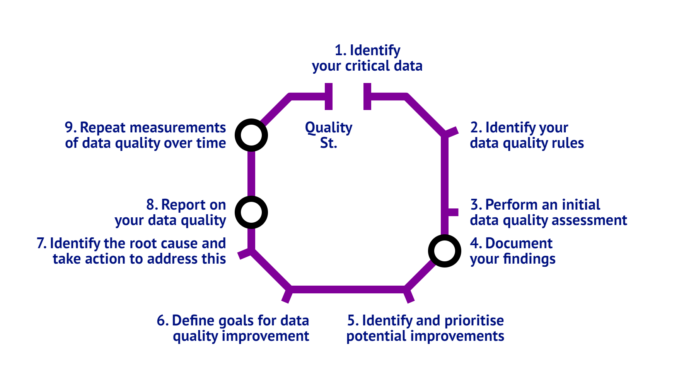

 (see “The Government Data Quality Framework: Guidance — Gov.uk”)
…sometimes it is all three at once - like in the waste emergency!
see “Local Authority Data Explorer - DLUHC Data Dashboards — Oflog.data.gov.uk”
Successful operations have clarity on provision:
…having a clear link to the original source, in the form of master or reference data, helps services to plan
The Winner of the 2023 Data Linking Award was Lewisham Council for integrating its Waste and Recycling Service to the Local Land and Property Gazetteer ‚Ķ the council has ensured that households eligible for food and garden waste collection can access the appropriate services, but do so without incurring additional costs.‚Äù Shout to William for pulling this off with postgis and qgis ü¶Ñ
The strategic plan records 52 key perf ormance indicators, key political decisions are made based on this data
(see Askham et al. 2013)
A school has 120 current students and 380 former students (i.e. 500 in total).
The student database shows 501 different student records.
This includes Bob Tables and Bobby Tables as separate records, despite only one student at the school named Bob Tables.
This shows that the data set has a uniqueness across all records of 500/501 x 100 = 99.8%
In a school, a student’s date of birth has the same value and format in the school register as that stored within the student database.
This is an example where reference data may be used, if it exists for a person.
A school has a service level agreement that a change to an emergency contact will occur within 2 days.
A parent gives an updated emergency contact number on 1 June.
It is entered into the student database on the 4 June.
It has taken 3 days to update the system which breaches the agreed data quality rule.
Primary and Junior School applications capture the age of a child. This age is entered into the database and the age checked to ensure it is between 4 and 11. Any values outside of this range are rejected as invalid.
A school receives applications for its annual September intake and requires students to be aged 5 before 31 August of the intake year.
Someone completes the Date of Birth (D.O.B) on the application in the US date format. The student is accepted in error as the date of birth given is 09/08/YYYY rather than 08/09/YYYY.
Inaccuracy is important too, namely when storing anonymised or de-identified (but still linkable) data.
The six rules may require juggling at times:
In 2018 the Office for National Statistics (ONS) introduced a new model for publishing Gross Domestic Product (GDP). This enabled monthly estimates of GDP to be published. However, there was a trade-off between timeliness and accuracy of the data.
UPRN, always UPRN! This is sometimes achieved with systems integration (e.g. postcode to address completion), and sometims with data matching and linking (Extract Transform Load pipelines)
e.g. creation of systems and/or data integrations that implement data standards (yep UPRN… again)
(see “The Government Data Quality Framework: Guidance — Gov.uk”)
Convert the quality measurements into Key Performance Indicators (KPIs) that can be reliably monitored (hence the use of numeric metric in the initial investigation).
Automate the monitoring of the KPIs derived in the initial assessment: make some dashboards